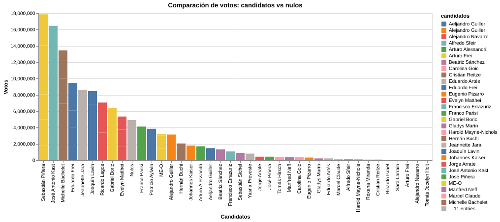

Introducción
El año pasado José Antonio Kast se coronó como el candidato más votado en la historia de Chile, ocupando el podio con otros monstruos políticos como Michelle Bachelet y Sebastián Piñera. Dentro de ese histórico podio figura un actor inesperado, el voto nulo, una opción que a través de los años solo se ha hecho más y más popular.
Visualización de datos

La visualización compara el desempeño electoral de los candidatos presidenciales con los votos nulos registrados en todas las elecciones desde la vuelta a la demcoracia incluyendo segundas vueltas.
Crónica
El año 1989 Chile votó pro su primer presidente desupués de más de 15 años de dictadura. Patricio Aylwin salió electo con 3.850.571 votos. Si bien la vuelta a la demcoracia fue un momento importantísimo en la historia de nuestro país, también vio el nacimiento de una amenaza que no ha hecho más que crecer, la polarización política.
Siendo un fenómeno bastante bullado hoy en día, la polarización ha surgido como herramienta para algunos grupos para posicionarse en el poder. El año pasado José Antonio Kast se posicionó como el candidato presidencial más votado en nuestro país (considerar el voto obligatorio), un candidato que en otras votaciones fue tildado de ultraderechista y un declarado defensor de la dictadura ¿Cómo llegamos a este punto?.
La historia presidencial de Chile se mueve como un pendulo, llevamos más de 10 años entre izquierda y derecha, y esta rivalidad lentamente se ha comvertido en una enemistad hasta que llegó el punto en que estar al medio es inviable. El auge de discursos extremos se ha hecho normal arlededor del mundo, no solo en Chile. Tal como vemos en el gráfico podemos ver que candidatos de ambos lados destacan entre los más votados, pero también vemos al voto nulo. El voto nulo se ha convertido en una herramienta de la ciudadanía para expresar su descontento con la realidad que vivimos, llegando a un punto álgido en la votación pasada donde uno de cada cinco chilenos anuló su voto (nulo y blanco).